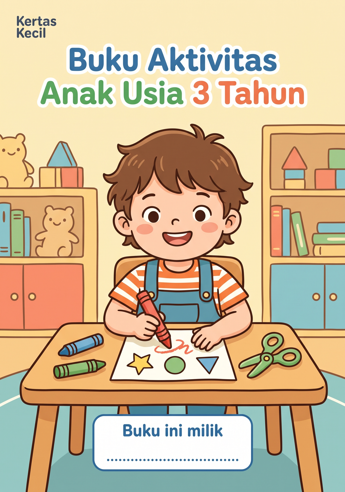
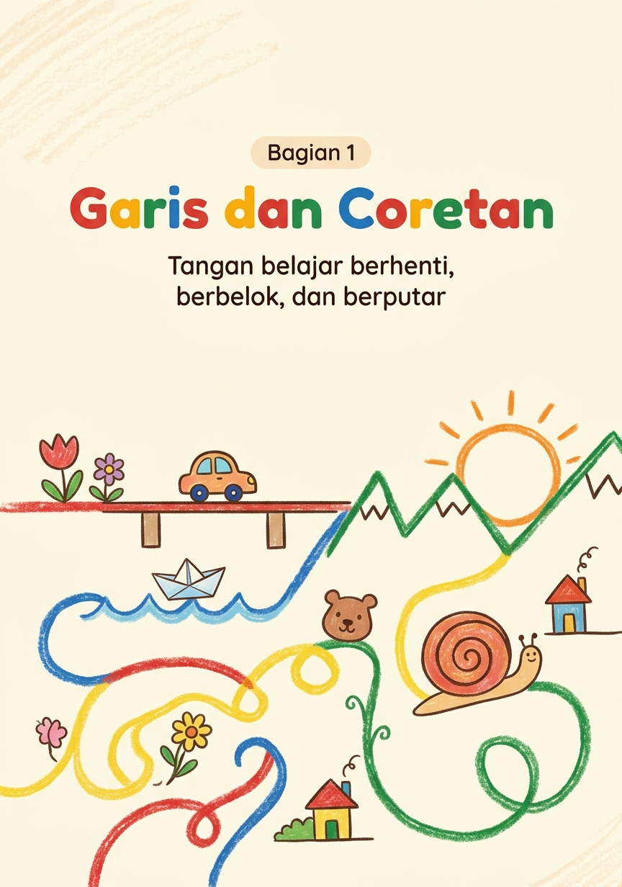
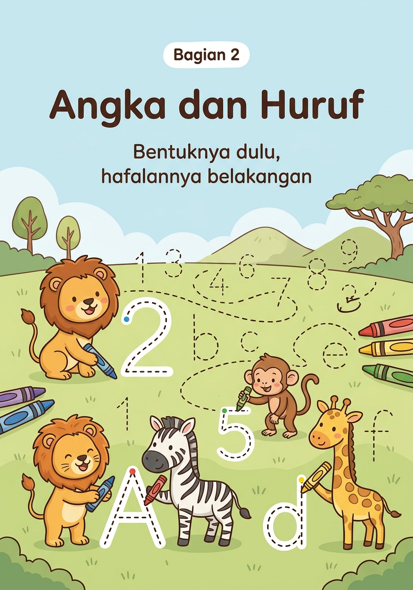
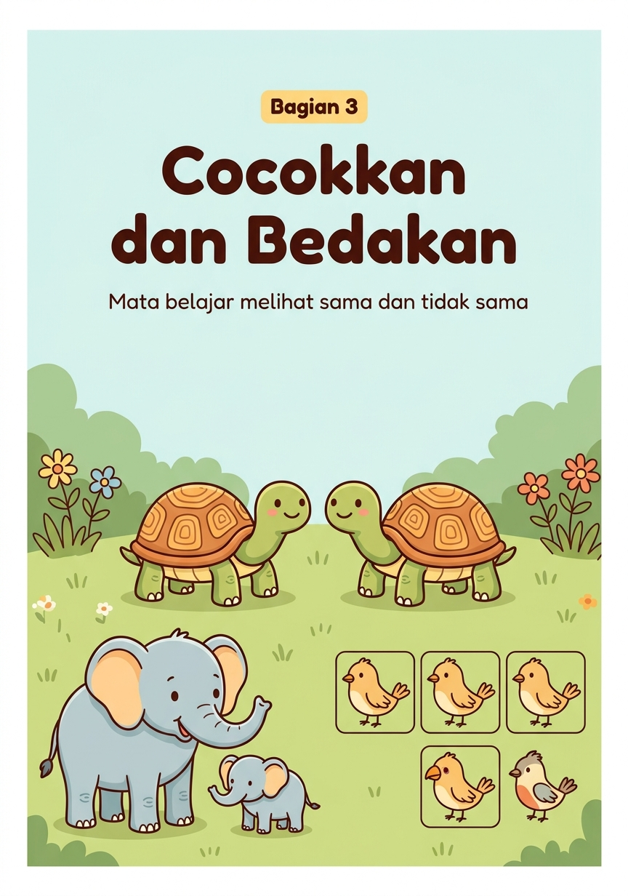
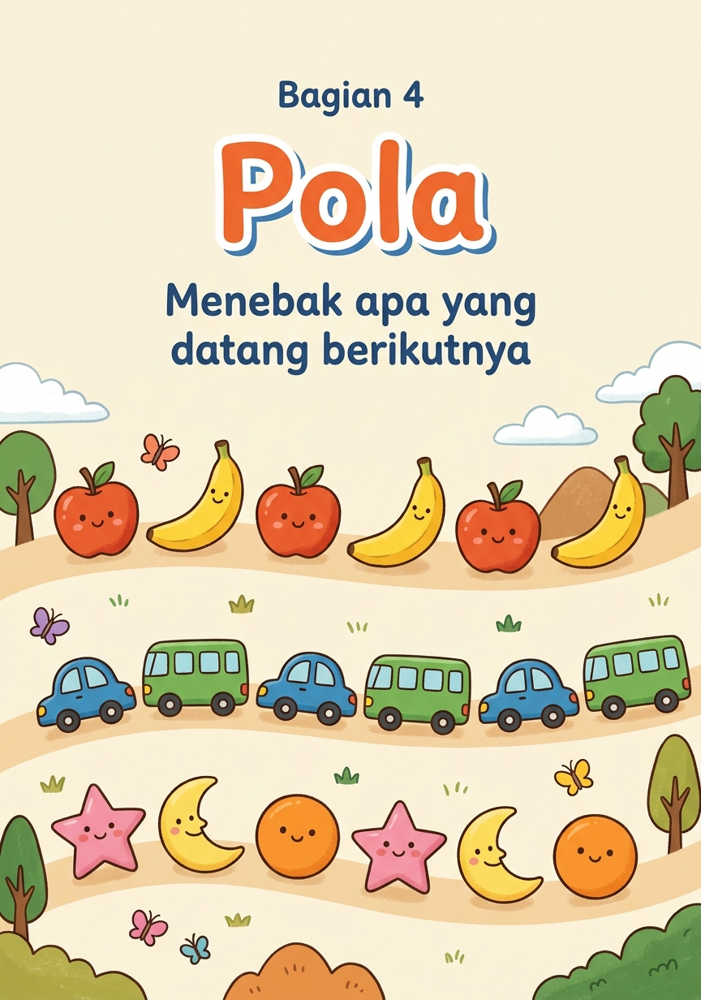
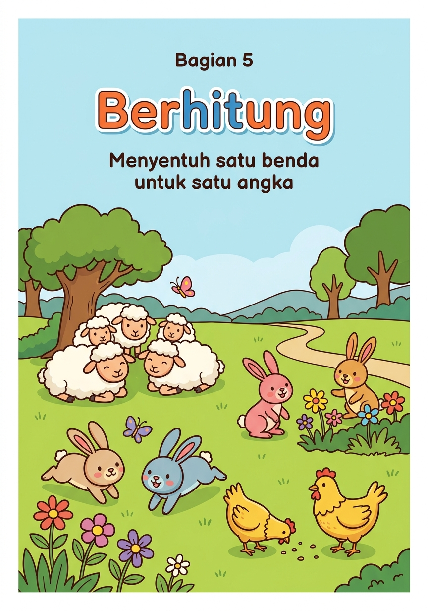
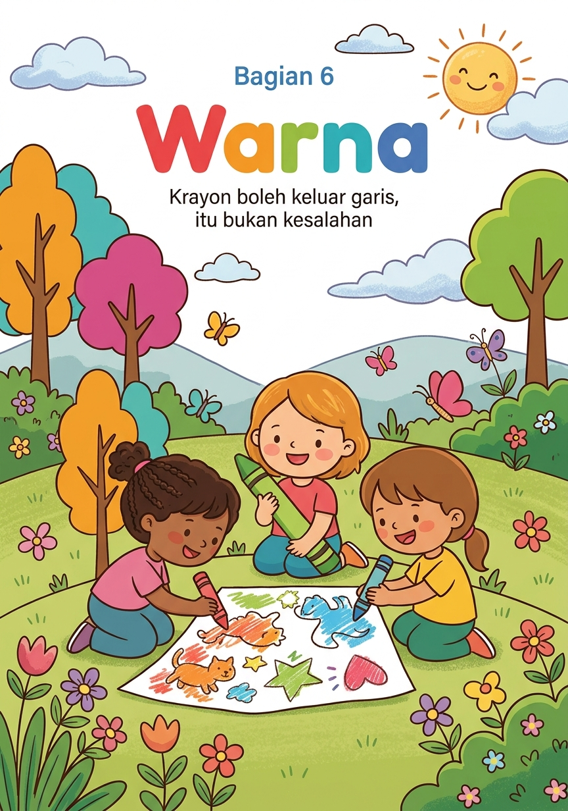
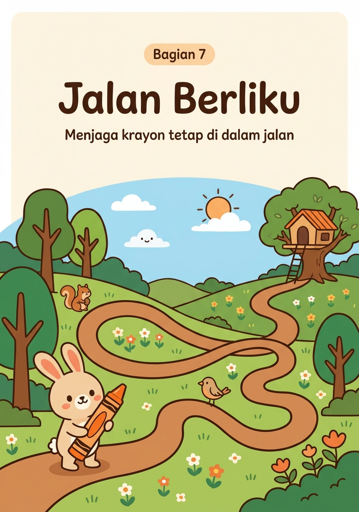
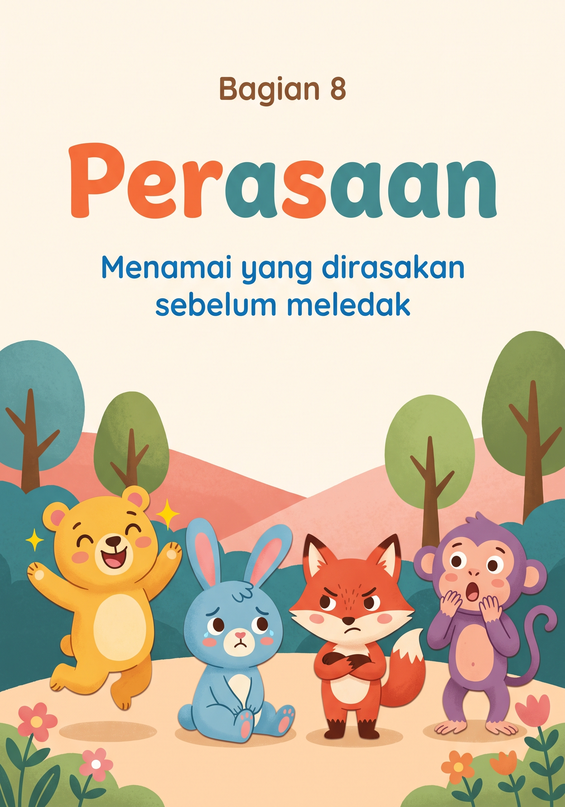
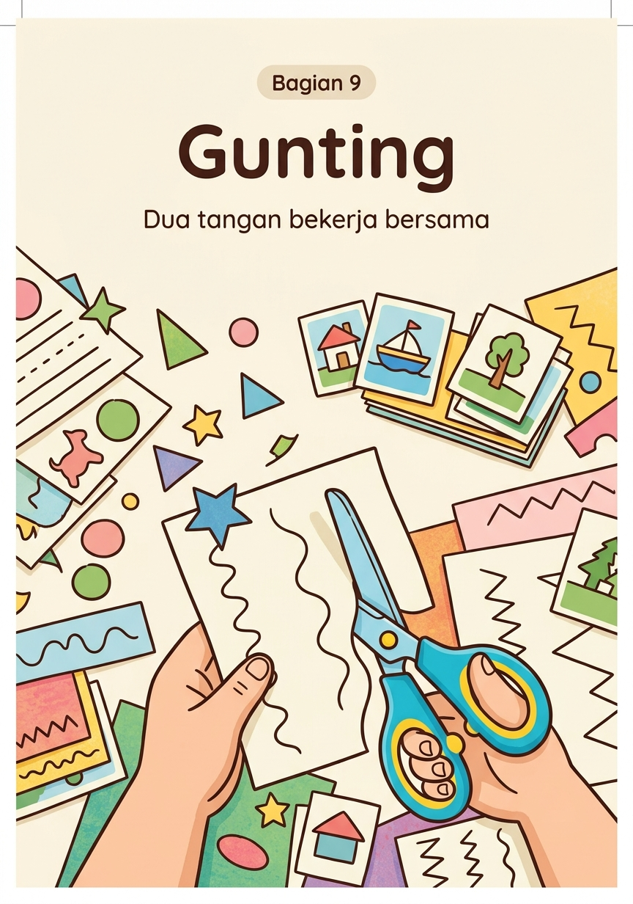

Tarik dari titik hijau sampai ke ujung.
Tarik dari titik hijau ke bawah.
Tarik dari titik hijau ke ujung yang lain.
Ikuti jalannya naik lalu turun.
Ikuti jalannya turun lalu naik.
Ikuti ombaknya sampai ke ujung.
Ikuti gigi gergajinya.
Mulai dari titik hijau, putar sampai bertemu lagi.
Tarik dua garis sampai bersilangan.
Ikuti putarannya tanpa mengangkat tangan.
Ikuti busurnya dari titik hijau.

Telusuri angkanya mulai dari titik hijau.
Telusuri angkanya. Mulai dari titik hijau.
Telusuri angkanya pelan-pelan.
Telusuri hurufnya. Sebut bunyinya sambil menarik.
Telusuri hurufnya dari titik hijau.
Telusuri huruf besarnya.

Tarik garis dari gambar kiri ke pasangannya di kanan.
Tarik garis ke buah yang sama.
Lingkari gambar yang sama dengan gambar di kotak kiri.
Coret satu gambar yang berbeda sendiri.
Lingkari yang paling besar di setiap baris.
Tarik garis ke kendaraan yang sama.

Lihat urutannya, lalu lingkari gambar yang cocok untuk kotak kosong.
Lihat urutannya, lalu lingkari gambar yang cocok untuk kotak kosong.
Lihat urutannya, lalu lingkari gambar yang cocok untuk kotak kosong.
Lihat urutannya, lalu lingkari gambar yang cocok untuk kotak kosong.

Hitung benda di dalam kotak, lalu lingkari angkanya.
Hitung benda di dalam kotak, lalu lingkari angkanya.
Hitung benda di dalam kotak, lalu lingkari angkanya.
Tarik garis dari kelompok benda ke angka yang tepat.
Lingkari kelompok yang lebih banyak.
Hitung hewan di dalam kotak, lalu lingkari angkanya.

Warnai kotak yang hurufnya sama dengan contoh di atas.
Warnai tetesan sesuai warna contoh di baris atas.
Warnai matahari, awan, dan balonnya.
assets/warnai_1.jpeg.Warnai ikan, bintang laut, dan rumput lautnya.
assets/warnai_2.jpeg.Warnai bunga, daun, dan kupu-kupunya.
assets/warnai_3.jpeg.Warnai buah-buahannya.
assets/warnai_4.jpeg.Warnai hewan-hewannya.
assets/warnai_5.jpeg.
Ikuti jalannya dari bawah sampai ke ujung.
Ikuti jalannya sampai bertemu hiu.
Ikuti jalannya sampai ke ujung.
Ikuti jalannya sampai burung sampai di pohon.

Lingkari wajah yang paling mirip perasaanmu hari ini.
Gambar mata dan mulutnya sesuai perasaan di bawah lingkaran.
Lingkari satu wajah, lalu ceritakan kapan kamu pernah merasa seperti itu.
Lembar ini pelengkap, bukan kurikulum. Anak usia tiga tahun belajar paling banyak lewat bermain bebas, bicara, dan menyentuh benda nyata. Gunakan halaman ini sebagai selingan singkat, bukan pengganti waktu bermain. Kalau harus memilih antara mengerjakan satu halaman atau bermain di luar, pilih bermain di luar.
Lima sampai sepuluh menit sudah cukup. Kalau anak berhenti di tengah, hentikan tanpa membujuk. Halaman yang sama boleh diulang minggu depan, dan mengulang justru tanda anak menikmatinya. Rentang perhatian usia tiga tahun memang sependek itu, bukan tanda anak tidak fokus.
Jangan kejar kerapian. Keluar garis, warna terbalik, dan angka yang dilewati itu normal. Yang dilatih di sini kontrol tangan dan rasa mampu, bukan hasil akhir yang bagus. Komentari usahanya, misalnya kamu menariknya pelan-pelan sampai ujung, bukan hasilnya bagus.
Krayon dulu, pensil belakangan. Krayon gemuk dan spidol besar tidak memaksa jari menggenggam terlalu kecil. Genggaman tiga jari biasanya matang di usia empat sampai lima tahun. Kalau anak memegang dengan seluruh telapak, biarkan saja, itu tahap yang wajar.
Bagian gunting ada di paling belakang. Setiap halaman gunting punya garis potong di dekat punggung buku. Potong dulu lembarnya, baru berikan kepada anak, supaya ia tidak menggunting sambil memegang buku tebal. Halaman di baliknya sengaja dikosongkan. Gunakan gunting anak berujung tumpul dan tetap dampingi.
Kalau anak menolak, simpan dulu. Menolak berulang kali bukan tanda tertinggal, hanya tanda belum waktunya. Simpan bundel ini satu atau dua bulan lalu tawarkan lagi. Anak yang dipaksa duduk mengerjakan lembar kerja lebih sering kehilangan minat belajar daripada yang dibiarkan menunggu sampai siap.

Potong sekali di setiap garis merah.
Gunting mengikuti garis sampai ke ujung.
Gunting mengikuti ombaknya.
Gunting mengikuti gigi gergajinya.
Gunting mengikuti garis putus-putus.
Gunting mengikuti garis putus-putus.
Gunting di garis putus-putus, lalu pakai kartunya untuk main tebak-tebakan.
Gunting di garis putus-putus, lalu kelompokkan mana buah dan mana sayur.
Buku Aktivitas Anak Usia 3 Tahun
Kertas Kecil adalah buku aktivitas untuk anak usia tiga tahun yang dikerjakan cukup dengan krayon dan gunting. Tidak perlu stiker, lem, atau alat tambahan apa pun.
Isinya sembilan bagian: menarik garis dan coretan, menelusuri angka dan huruf, mencocokkan dan membedakan, pola, berhitung sampai sepuluh, mewarnai, mengikuti jalan berliku, mengenali perasaan, dan menggunting. Setiap halaman punya satu contoh yang sudah dikerjakan, jadi orang tua tidak perlu menebak maksud perintahnya.
Di setiap halaman ada catatan singkat untuk orang tua tentang keterampilan yang sedang dilatih dan apa yang wajar terjadi di usia ini. Lembar menggunting ditaruh di bagian belakang dan bisa dilepas satu per satu.